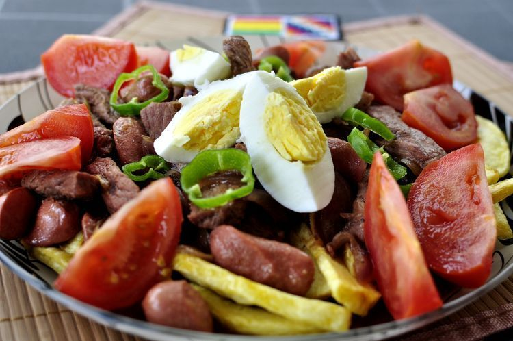
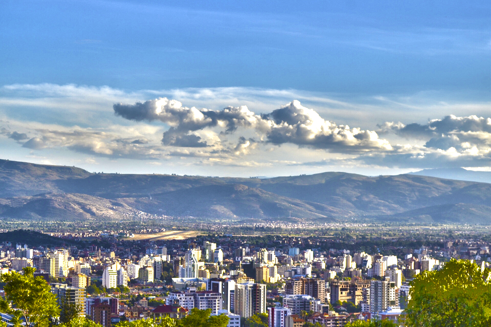

En esta pagina encontrar lo mejor de cochabamba lugares turisticos, fauna, flora,
gastronomia tipica del departamento y clima actual para tener la mejor experiencia
en el departamento mas hermoso de Bolivia.
Lugares Turisticos

Descubre los mejores lugares turisticos de cochabamba
Fauna y flora

Aprede mas acerca de la fauna y flora de la llajta.
Gastronomia
Conoce los platos mas representativos de la ciudad con mejor gastronomia del pais.
Clima
Mantente al tanto de los datos del clima para disfrutar tu dia.